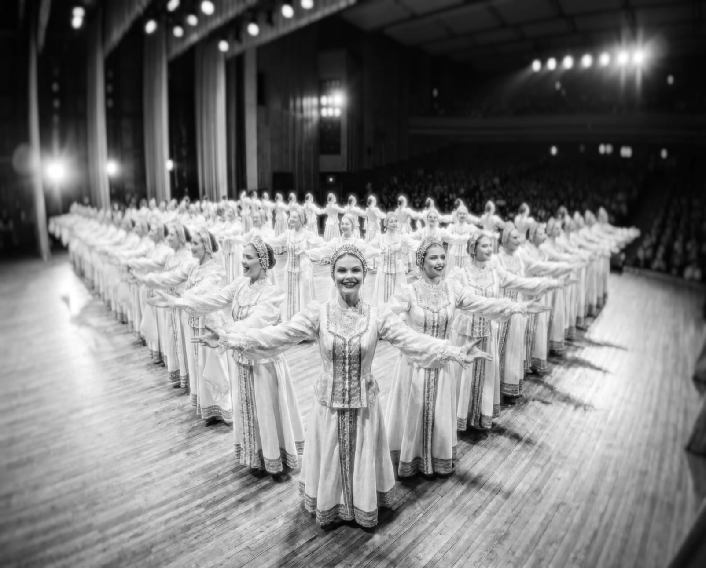
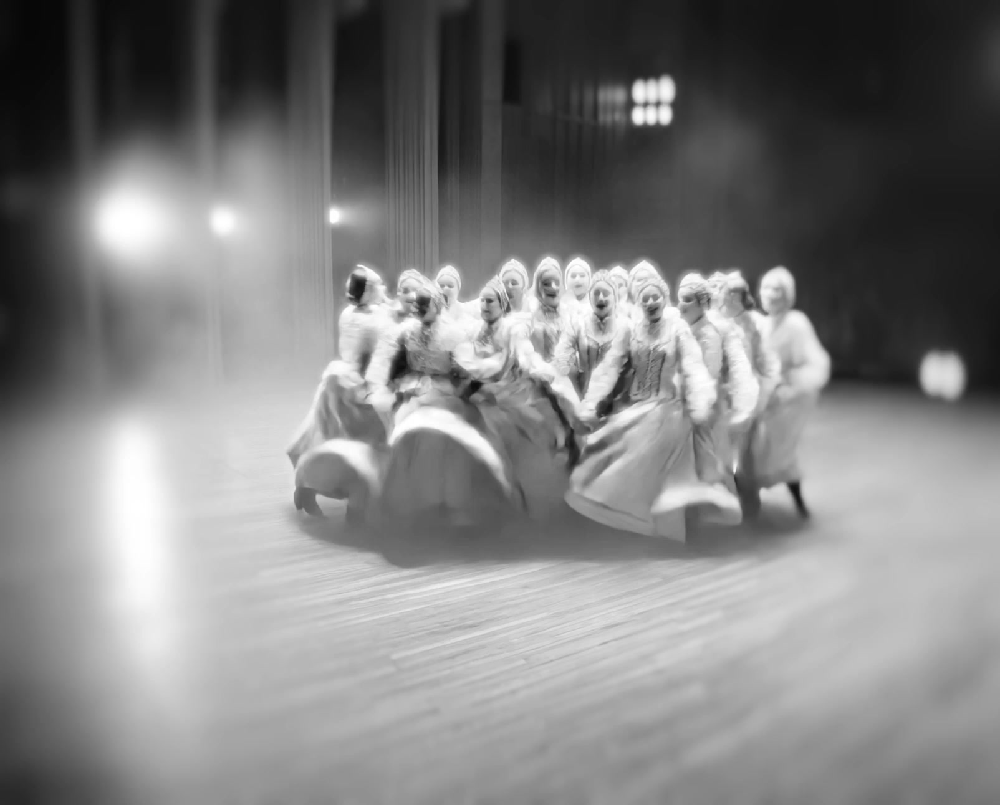
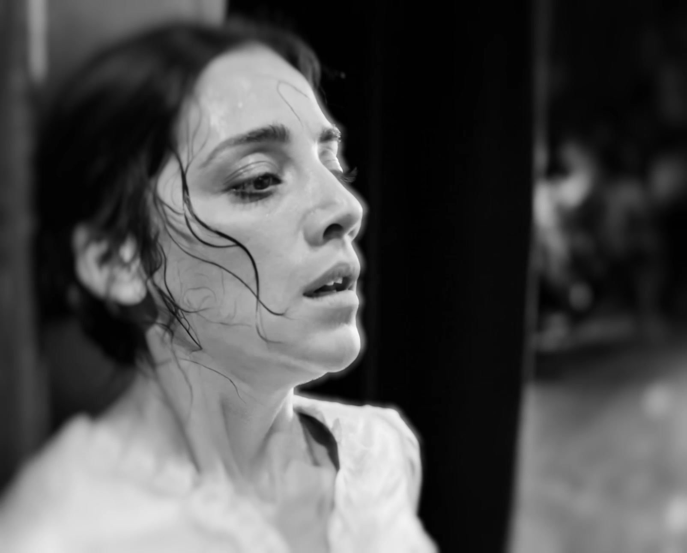
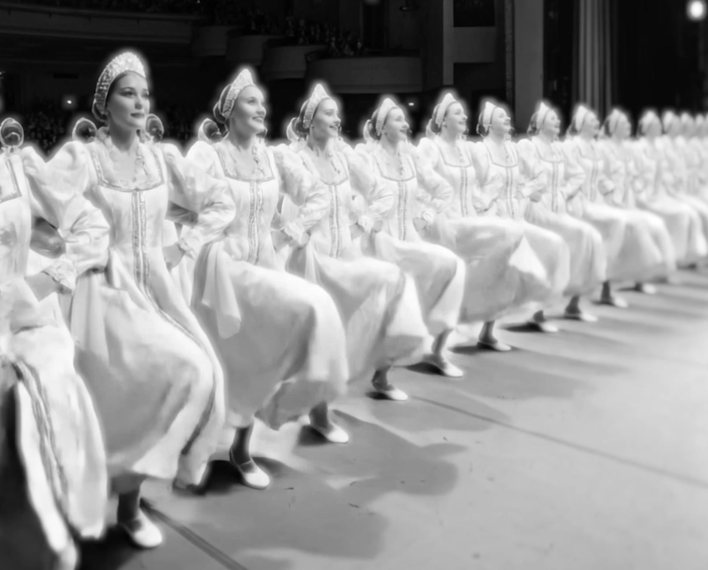

AUTHORIAL SHORT FILMSWAN
A short film about the invisible labor behind effortless beauty.

01 / THE IDEAThe effort behind the image
The film begins with perfect unity: graceful, controlled and seemingly effortless. As the illusion opens up, repetition, pressure and exhaustion reveal what it takes to make beauty look natural.

ON STAGE / GRACE, PRECISION, CONTROL
BACKSTAGE / PAIN, EXHAUSTION, RECOVERYRepeat until it looks easy
Multiplying the performer turns rehearsal into a visual machine. The same gesture becomes beautiful at a distance and oppressive up close. Repetition makes the pressure visible.

03 / MY CONTRIBUTIONA complete solo production
I created the film from the first idea to the final sound.
- Concept
- Concept development & direction
- Visuals
- Art direction & AI scene creation
- Motion
- Animation & motion design
- Post-production
- Editing, color grading & sound design